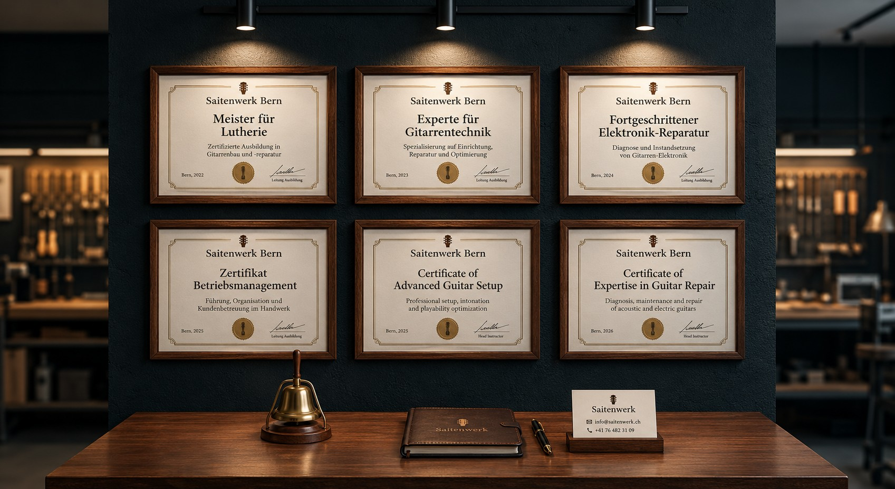

Zertifizierte Expertise & Meister-Qualität

Dein Instrument in meisterhaften Händen: Unser Team besteht aus zertifizierten Handwerksmeistern. Die Zertifikate an unserer Wand garantieren höchste Präzision, Fachwissen und Leidenschaft für Zupfinstrumente. Wir verwenden ausschließlich erstklassige Materialien..
Unsere Angebote & Preise
- Saitenwechsel & Pflege 35 CHF
- Professionelles Gitarren-Setup 85 CHF
- Elektronik-Reparatur & Modifikation 60 CHF
Garantie: Alle Reparaturen werden mit 1 Jahr Garantie ausgeführt.